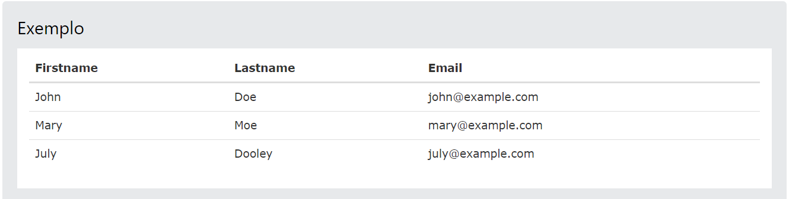

Tabela de Bootstrap
Tabela básica de Bootstrap:
• Uma mesa Bootstrap básica tem um preenchimento leve e apenas divisórias horizontais. A .tableclasse adiciona estilo básico a uma tabela. Leia Mais ... »
Linhas listradas:
• A .table-stripedclasse adiciona listras de zebra a uma tabela. Leia Mais ... »
Tabela com bordas:
• A .table-borderedclasse adiciona bordas em todos os lados da tabela e células. Leia Mais ... »
Linhas ao passar o mouse:
• A .table-hoverclasse adiciona um efeito de foco (cor de fundo cinza) nas linhas da tabela. Leia Mais ... »
Tabela condensada:
• A .table-condensedclasse torna uma tabela mais compacta cortando o preenchimento de células pela metade. Leia Mais ... »
Classes contextuais:
• As classes contextuais podem ser usadas para colorir linhas da tabela (<tr>) ou células da tabela (<td>). Leia Mais ... »
| Classe | Descrição |
|---|---|
| .active | Aplica a cor de foco à linha da tabela ou célula da tabela. |
| .success | Indica uma ação bem-sucedida ou positiva. |
| .info | Indica uma mudança ou ação informativa neutra. |
| .warning | Indica um aviso que pode precisar de atenção. |
| .danger | Indica uma ação perigosa ou potencialmente negativa. |